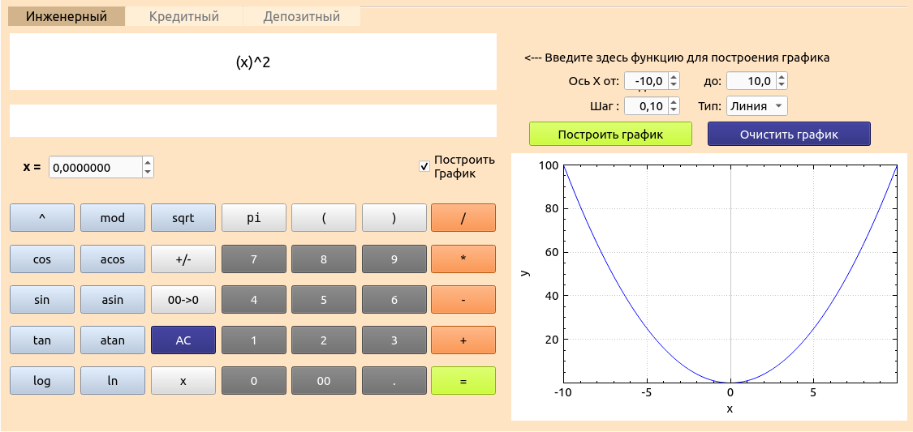
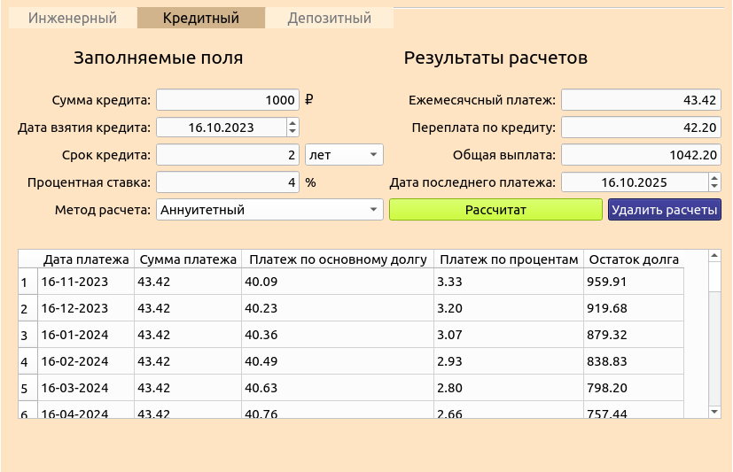

Для установки приложения введите в терминале команду make install. Оно будет установлено в папку build/SmartCalc/Calculator.
Для удаления приложения выполните команду make uninstall.
Настоящее приложение имеет три вида калькулятора:
Для переключения режимов выберите нужную вкладку в верху экрана.
Инженерный калькулятор позволяет вычислять простые и сложные математические выражения, содержащие различные операторы и функции. Приложение поддерживает ввод, как целых чисел так и вещественных чисел, введенных через точку, переменной x, а также константу пи.
При необходимости есть возможность ввести значение переменной x в специальное поле (только при расчете в калькуляторе).
Для построения графика функций поставте галочку "Построить график" и введите выражение в поле ввода, выберите нужный диапазон по оси х и нажмите клавишу Построить график.
Построенный график можно зуммировать и перемещать с помощью мыши.
Для очистки графика нажмите на клавишу Очистить график.
Кредитный калькулятор позволяет вычислять: ежемесячный платеж, переплату по кредиту, общую выплату по кредиту.
Для выполнения расчета необходимо заполнить поля ввода: общая сумма кредита, срок (в месяцах или годах), годовая процентная ставка и выбрать тип ежемесячного платежа (аннуитетный или дифференцированный). Затем нажать кнопку Рассчитать. 
Депозитный калькулятор позволяет вычислять: сумму начисленных процентов, сумму налога (если она установлена государством), сумму на вкладе к концу срока.
Для выполнения расчета необходимо заполнить поля ввода: сумма вклада, срок размещения (в днях, месяцах или годах), годовая процентная ставка и выбрать периодичноть выплат. Затем нажать кнопку Рассчитать.
По необходимости заполните следующие поля: капитализация процентов, пополнение и снятие денежных средств с определенной периодичностью.